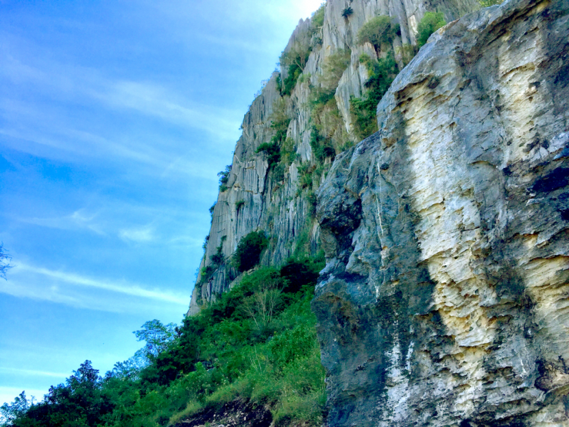
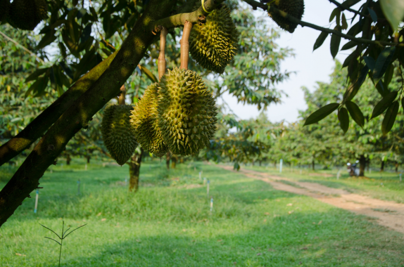
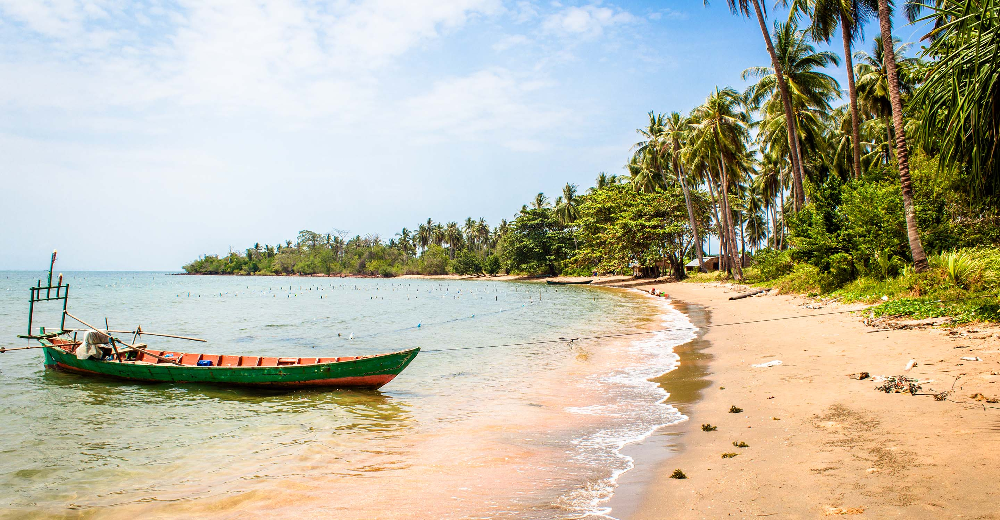
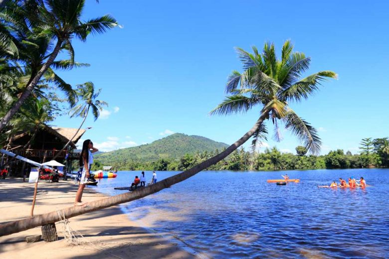
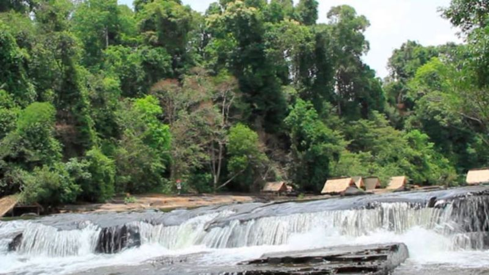

Kampot (Khmer: ខេត្តកំពត ) is a (south west province) province (khaet) of Cambodia. It borders the provinces of Koh Kong and Kampong Speu to the north, Takeo and Kep and Vietnam to the east and Sihanoukville to the west. To its south it has a coastline of around 45 km on the Gulf of Thailand. It is rich in low arable lands and has abundant natural resources. Its capital is Kampot town.This province is located in the Southwest of the country, having an eighty kilometres coastal strip with the Gulf of Thailand. The provincial capital is named Kampot and sits near the base of the abundant green Elephant Mountains and the famous Bokor Hill Station. Compete to crowded Sihanoukville in the North of the province you may find quietness. Kep Beach, Rabbit Island, Bokor Hill Station, and countryside tours are perhaps the most popular day tours out of Kampot with tour operators offering very competitively priced tours.
Old Market Street bisects downtown Kampot into two halves, with the famous Durian Roundabout to the north, and the slightly-less-naff Saltworkers Roundabout to the south. Although the Old Market building itself is derelict, the street serves as Kampot’s main drag and is home to a handful of popular cafes and shops.Chinese shophouses (with a spattering of 19th-century French architecture thrown in) dominate the skyline in Kampot, once a regional administrative capital and formerly Cambodia’s most important sea port. Many original buildings still line the streets – made all the more interesting by decades of ad-hoc additions and half-finished renovations.A few buildings have been resurrected with a lick of brightly coloured paint, while other street-facing facades sit in various states of disrepair and decay.
The listings here are only a sampling of what is out there and the best course of action is simply to wander the neighborhood and try out a few places, whether they are listed here or not. The temptation is to allow the Old Market/Pub Street magnet suck you into this tourist ghetto, and while definitely a worthy endeavor for consuming alcohol, you might consider that by a large, the best food options are *not* found here, but rather spread around town in less congested areas where there is less price competition that can result in an inferior product. This is not to say that there isn't good food in this area, but that there are some excellent opportunities found elsewhere - in particular farther up Sivatha and over on Wat Bo Road, and a few places like Abacus and The Touich that aren't near anything but themselves.
The town of Kampong Trach, Kampot is a small one but still offers enough attractions to the tourists. Here you would find various limestone caves and tubes in a nearby mountain. Once there was also a large cave in the center of the mountain whose roof had collapsed and thus a small enclosed jungle had been formed in the area. In the caves you would find various pagodas and caves which are excellent sightseeing attractions. Therefore, do not forget to bring a flashlight and always a pair of good walking shoes.You would find various small mountain wells at the foot of the mountain in Kampong Trach, Kampot. These are worshipped by not only the local Cambodians but also the Chinese and the Vietnamese people. One of the wells is about 30 meters in diameter and contains different colored soil. The other smaller wells have stones which look like animal figures. The large well has a trench which leads to the Viel Sre Muoy Roy and Thma Dos wells of Kampot.
The reason you might have been offered so much of the spiky, strong-smelling fruit known as durian while enjoying the Teuk Chheu rapids is because of the proximity of the plantations, which line either side of the road en route. Kampot durian is famous throughout Cambodia for its flavor and sweetness.It is deemed superior to Thai durian by Khmer connoisseurs (Prime Minister Hun Sen among them) and the price reflects this it can cost twice as much as its imported counterpart. Many foreigners do not enjoy the strong taste and smell of this strange fruit, with its creamy yellow flesh encased in brown spiked skin, but those who do will find the cheapest (and tastiest) durian in the Kingdom in Kampot.
Twenty to 40 minutes by local boat from Kep is Rabbit Island. A place of white sandy beaches and coconut palms, it is an idyllic day trip from either Kampot or Kep. Although the waters are clear there is no coral, but don't let that put you off donning a mask and flippers. Rabbit Island is a place of psychedelic fish.There are some beach bars in which you can stay the night for about $10, though conditions are very basic. Seafood here is great. Most likely when you order crab on Rabbit Island, your restaurateur will wade out into the tepid ocean and haul your lunch directly from one of the crab pots. It doesn't come fresher than that. A boat for the return trip costs $20. Guesthouses offer a package for $7, but you won't get to pick your own boat, beach, and crab buddies.Koh Tonsay, or the Rabbit Island, is the choice of visitors who would like to experience the beaches in Kampot. It comes close to the ideal tropical island, with its fine white sand, coconut palms on the beach, basic accommodations, and few tourists. There are, however, a few local families living there.Things to Do in Rabbit IslandRabbit Island is undeveloped, and the only thing that one can do here is swimming, beachcombing, and walking around. The water is shallow and there are no corals, so diving is out. Snorkeling may be good though, for there are many-colored fish in the area.One of the best things to do here is to eat seafood, especially the crabs. Enjoy it fresh off the ocean every time you order. For those who love to get physical, the whole island is only around six kilometers around and can be walked in three hours and ran in less than one or two hours. The views include fishing communities and the occasional wildlife and household animals.
Phnom Daung, Kampot is located in the Beoung Tapream Village, Treuy Koh Commune in Kampot. It is 7 kilometers away from the provincial city. Phnom Daung Classification Nature Wildlife and Preserves Location Beoung Tapream Village, Treuy Koh Commune, Kampong Bay District Accessibility 7 km (11mn) From Provincial Town.Other Nature Wildlife around Phnom Daung, Kampot Phnom Chhnok, Kampot is a nature wildlife and preserves region. It is one of the main tourist attractions in Kampot. It is a must visit for the tourists and the guests visiting Kampot. This place is situated in the Bos Trobek Village, Trorpeang Pring Commune in Kampot. It is 9 kilometers away from the provincial town. Again there is the Bokor National Park where the guests can pay a visit. It is in Cambodia and is also one of the main sightseeing spots in Kampot. It is home to a variety of many animals and birds of Kampot. It is a must see for the guests and the visitors paying a visit to the city of Kampot.
The Tekchhou Resort in Kampot is a popular picnic place close to the town. The Tekchhou Resort in Kampot is set on the Prek Chha River and visitors come for the beautiful rapids. This resort in Kampot is famous among the local people on weekends you will find the Tekcchou Resort in Kampot very crowded. People in the nearby regions enjoy spending their weekends here.Teuk Chhu is located in Snomprampi village, Makprang commune, Kampot district, about 8 kilometers north of Kampot provincial town. Its main attraction is a stream that flows from Phnom Damrei via Phnom Kamchay. The cool, clear water flows over large rocks year round. This is a good place for swimming or bathing. There are many kinds of decicious fruit available, including durian, mangosteen, rambutan, mak prang, pineapple, grape fruit, custard apple and coconut. Only the durian, however, is available year round. Not far from Teuk Chhu is a zoo and plantation organized by His Excellency Nhim Vanda. The zoo raises animals, while the plantation grows a variety of fruit trees, including durian, rambutan and other fruits.There is a small zoo near the Tekcchou Resort in Kampot. Many animals and birds are kept here in enclosures. You can go with your family and friends and visit this zoo. Your kids will simply love watching animals at such a close distance.Transportation in Kampot is also conveniently available. You will find several modes of transportation which will take you to the Tekcchou Resort in Kampot in no time. The roads leading to this resort are very good. You can take a car on rent and drive down to this place or hop onto various buses which ply to the Tekcchou Resort, Kampot.This pleasant bathing spot is a major hit with locals. Waterfall enthusiasts should prepare themselves for a disappointment, however as these falls, 8km northwest of town, are really just a series of small rapids that don?t even move all that rapidly in the dry season. There is a proper waterfall 18km further up a dirt track from Teuk Chhou, but access is not straightforward, as the trail is pretty bad.